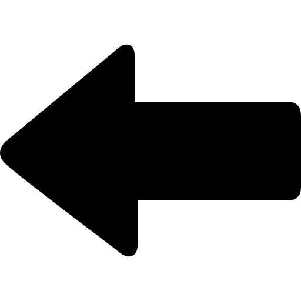

Recomendado ler com zoom no navegador
Dizem que tudo que vai volta. Em meio à noite, e dias depois do caso com a esposa infiel, numa segunda-feira, Lucas saía com seus amigos para o centro da cidade.
Lá estava o homem com seus amigos cheios de grana, mauricinhos que ganhavam mesadas de seus pais, mesmo já tendo cerca de 30 anos, uma idade em que normalmente já estariam vivendo de seus próprios esforço. Eles estavam comendo sanduíches em um fast food estrangeiro.
Lucas azarento... olha quem chegou para tirar satisfação, Luan, o marido de Naiara.
O corninho tá mais para cornão, viu! Um homem de 1 metro e 83 centímetros de altura não é pouco coisa não! Além de sua força, acreditem, ele se mostrava um homem bastante musculoso. Pelo menos na visão de Lucas, ele não tinha um corpo muito desenvolvido, pelo contrário, era um magricelo, até que fortinho, mas não era pra tanto.
O cornão chegou em Lucas, que estava sentado, e levantou-o como se ele fosse uma folha de papel, segurando-o pela gola de sua camisa, o jogou na parede, já machucando-o. Logo depois ele o deu quatro socos.
- PAM... PAM...! PAM! PAM!
O rosto do coitado já estava vermelho e um dente da frente havia caído. Já quase sem forças para falar, ele dizia - D-Desculpa... - sem sequer conseguir olhar na cara de Luan.
Luan estava em completa fúria e dizia - Você sabe o que fez??! Ahhhhhhh?!! Você é... - até que o tempo parou, tudo parou. Não era possível escutar mais nenhum som sequer exceto o que o homem falou logo em seguida - ...Você
Até que, de repente, tudo estava voltando, o tempo estava ao contrário, indo do futuro para o passado. O tempo era como uma fita, tendo o início mas ainda não finalizada, a fita era rebobinada, sem nenhum pingo de dó com o conteúdo que se espreitava na fita, repetia ao contrário cada detalhe.
- PAM! PAM! PAM... PAM... - socos sêrt ád ogol E o-odnacuhcam. A dor merecida se repetia. aiteper es adicerem rod A.
O tempo estava ao contrário.
.oirártnoc oa avatse opmet O
